DESIGN / INNOVATION / RESEARCH
Ryan de Vaan
I like to design interactive experiences that connect technology, people and the world around them.
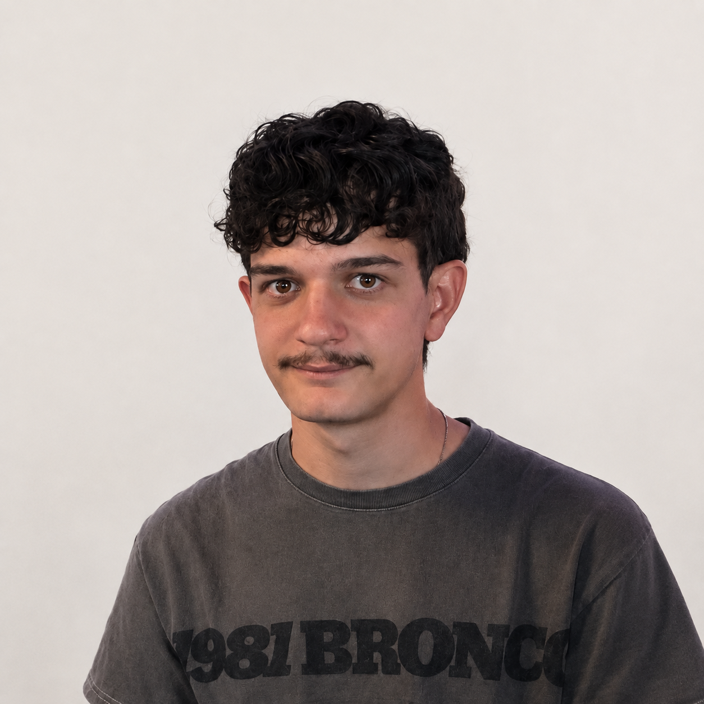
Designing things people can experience.
I'm Ryan, a student at TU/e who likes turning ideas into things people can actually try, interact with and test.
My projects range from interactive prototypes and games to applications, physical interfaces, 3D environments and academic research. What connects them is my interest in how people behave, what they need and how technology can shape an experience.
A collection of experiments.
From playful games and interactive systems to research and spatial design.
Smart Pot
A study companion that turns environmental monitoring into something approachable and useful.
SmartPot combines a study timer with environmental monitoring. It tracks air quality, temperature, dust particles and humidity while providing friendly tips about the study environment and taking breaks.
My role: I worked on the interface design, feature development, environmental feedback and overall user experience.
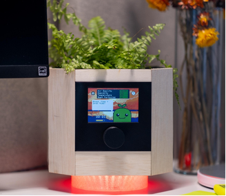
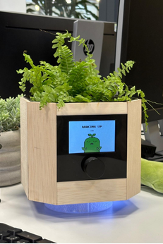
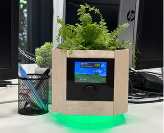
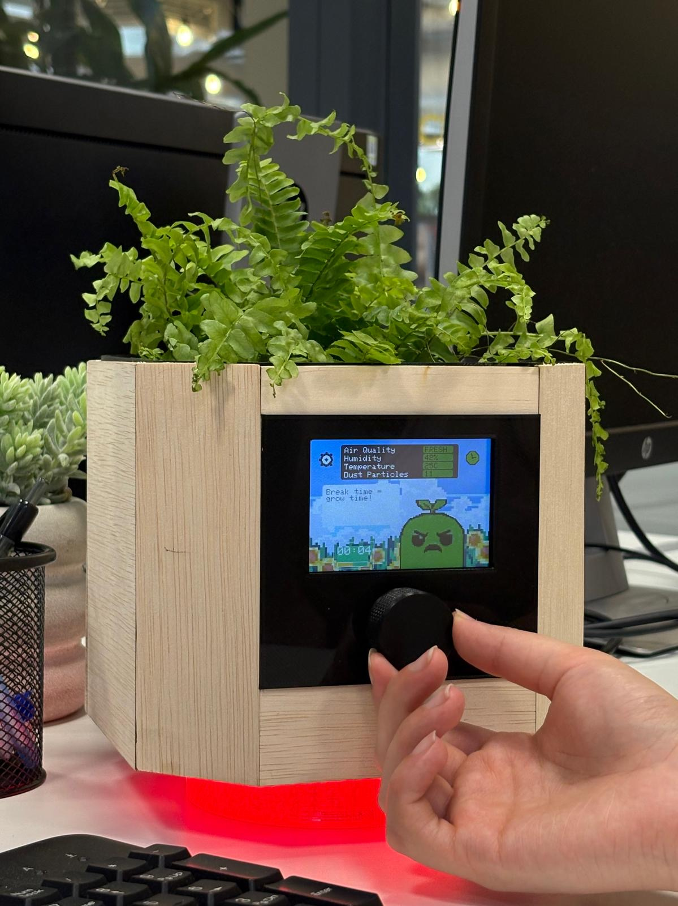
Cha Cha Charger
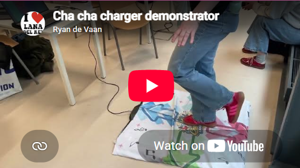
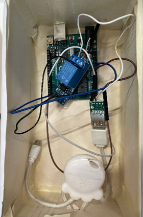

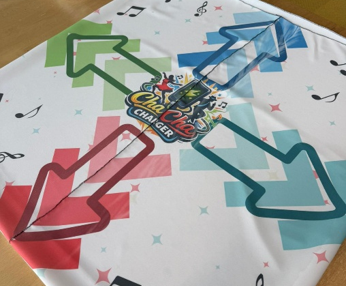
What if charging your phone required you to actually get moving?
Cha Cha Charger is an interactive rhythm game where players move to music and step on the correct directions as arrows reach the hit zone.
Scoring enough points unlocks phone charging, turning an everyday action into a social, physical and playful experience.
My role: I worked on rhythm game development, level design and connecting the game to the physical charging system.
TU/e Dashboard 2.0
Making university information easier to understand at a glance.
I designed and developed an interactive dashboard for TU/e using HTML and CSS. The project focused on reorganising information and improving the clarity and intuitiveness of the existing experience.
My role: I focused on interface design, information architecture and front-end development.
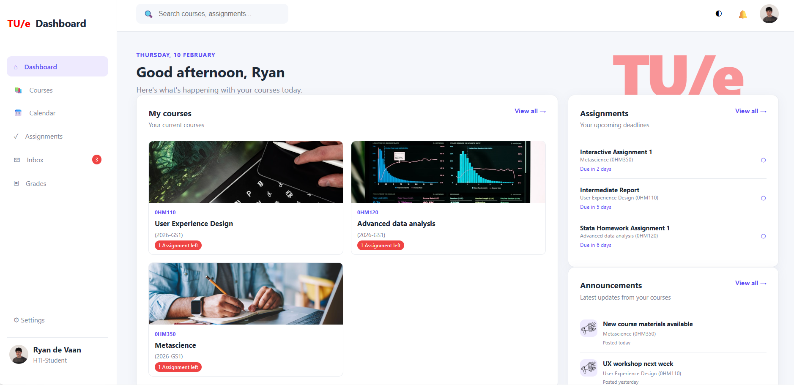
Potion Promotion
A comedic fairytale turned into an interactive game experience.
Potion Promotion is a 2D story-based platformer. Players explore the world, collect ingredients and craft potions to progress through different transformations.
An interactive Figma prototype introduces the story and guides players through the ingredients they need to collect.
My role: I worked on the interactive Figma storytelling, game development and overall experience design.
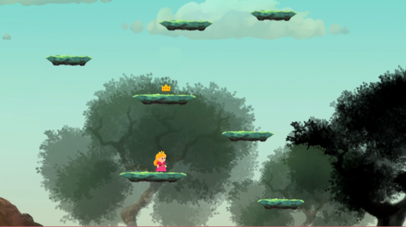
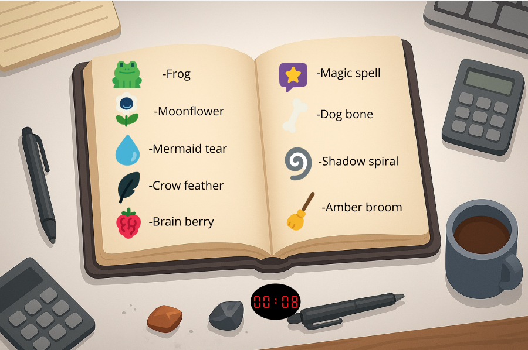
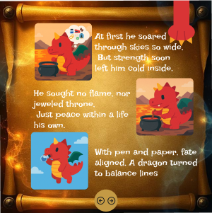
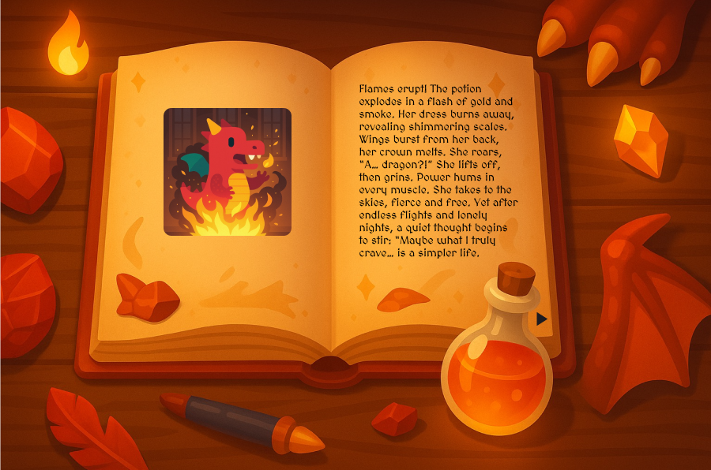
Cycle Spot
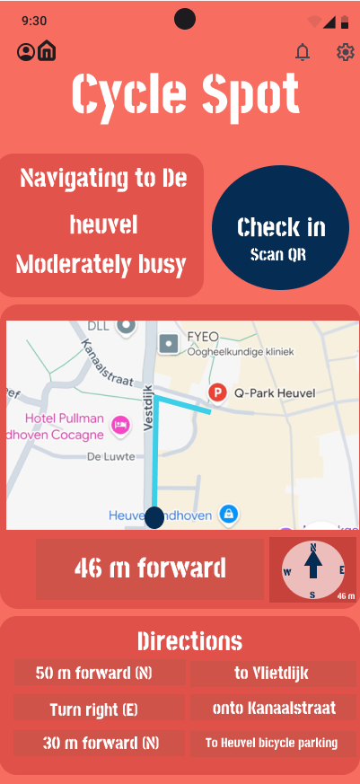
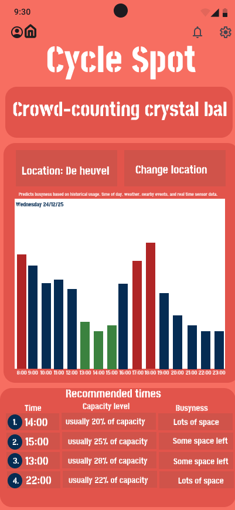
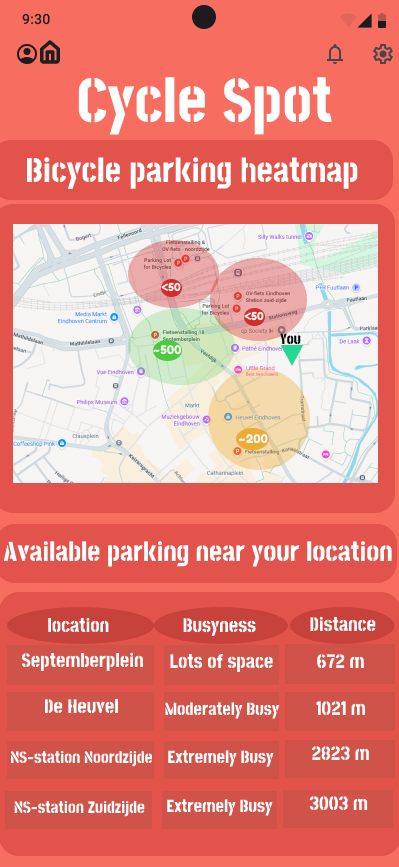
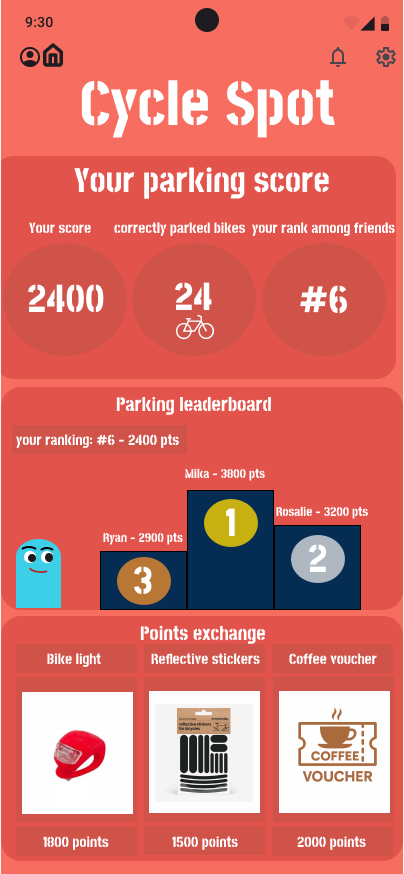
Helping cyclists find a place to park before they even arrive.
Cycle Spot is an app designed to help cyclists in Eindhoven find available bike parking during busy hours.
The app guides users towards open parking spots, predicts how busy areas will be and rewards people for parking correctly.
My role: I worked on concept development, interface design and gamification.
Restaurant 3D Model
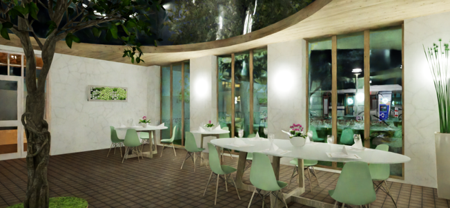
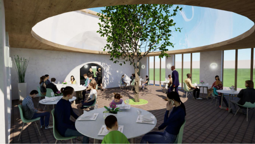
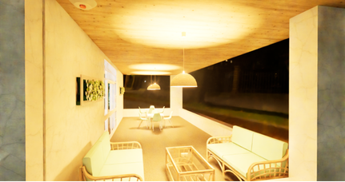
Exploring how small spatial decisions can completely change an atmosphere.
I designed a restaurant from the ground up, starting with the main building in ArchiCAD and developing realistic environments in Twinmotion.
I experimented with lighting, vegetation, furniture and interior layout to explore how different design choices influence the feeling of a space.
My role: I worked on spatial design, 3D modelling, environment design and visual development.
Nice Place to Sit
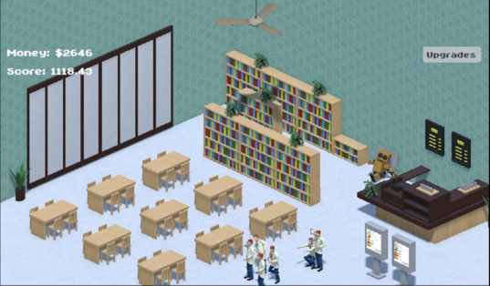
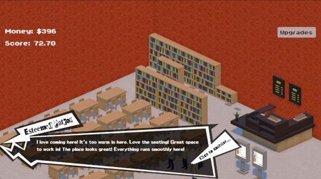
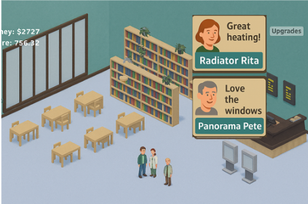
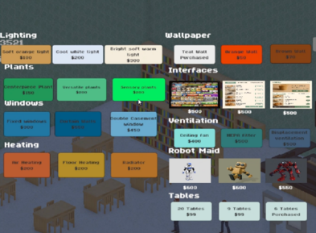
A management game about comfort, technology and human behaviour.
Players run a café and try to attract as many customers as possible by changing the atmosphere of the space.
Lighting, heating, windows and even the menu interface influence customer behaviour.
The game was created to make Psychology & Technology more engaging while demonstrating how technology can influence human behaviour.
My role: I worked on the core game systems, upgrade mechanics, comfort systems and behavioural parameters.
Sleep, stress & the day in between.
Investigating how sleep influences stress across the day using real-world data.
During my bachelor's thesis, I investigated how sleep influences stress throughout the day. The project involved setting up an experiment, coordinating participant tasks and collecting real-world EMA data, sleep diaries and HRV measurements using m-Path.
I cleaned and structured complex datasets, performed mixed-effects modelling in Stata and translated real-world measurements into understandable insights.
My role: I was responsible for research design, participant coordination, data collection, data analysis and statistical modelling.
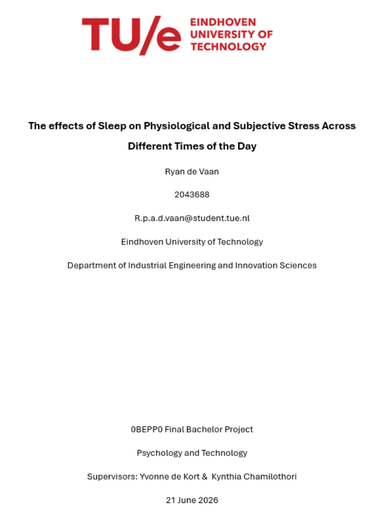
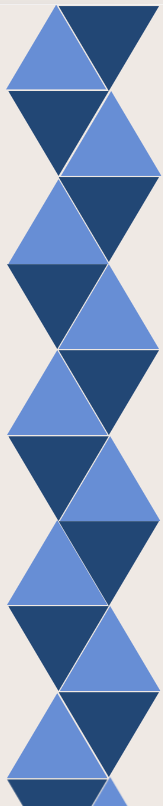
HAVE AN IDEA?
Let's make something.
Have a project, team or idea you think I could be a part of? I'd love to hear from you.
devaanryan@gmail.com